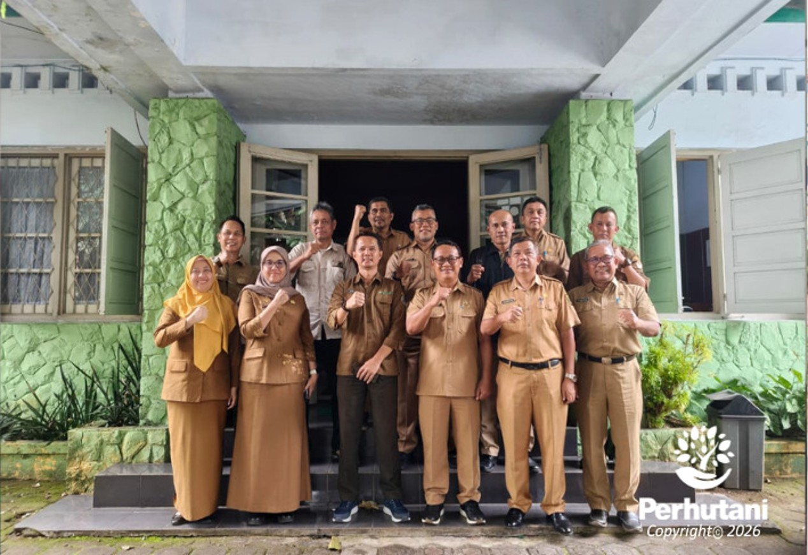

SUKABUMI, PERHUTANI (27/01/2026)| Guna memastikan kesiapan dan kelancaran peninjauan lapangan Koperasi Merah Putih, Administratur Perhutani KPH Sukabumi, Tofik Hidayat, bersama-sama dengan jajaran Pemerintah Kabupaten (Pemkab) Sukabumi menggelar rapat koordinasi di Control Room Kantor Perhutani KPH Sukabumi, pada Selasa (27/01).
Rapat tersebut dihadiri secara langsung oleh para pimpinan daerah, mencerminkan keseriusan dalam membahas Terwujudnya Koperasi Desa Merah Putih. Hadir dalam pertemuan tersebut Asisten Daerah Bidang Pemerintahan, Kesejahteraan Rakyat, dan Sosial (Asda Pemkesra), Asisten Daerah Bidang Perekonomian dan Pembangunan (Asda Ekbang), serta sejumlah kepala perangkat daerah terkait, yaitu Kepala Dinas Perumahan dan Tata Ruang (DPTR), Kepala Dinas Pemberdayaan Masyarakat dan Desa (DPMD), Kepala Badan Pengelola Keuangan dan Aset Daerah (BPKAD), dan Kepala Dinas Koperasi, Usaha Kecil dan Menengah (DKUKM).
Agenda utama rapat adalah menyinkronkan langkah dan membahas detail teknis pelaksanaan peninjauan lapangan ke sejumlah desa yang mengajukan permohonan Gerai Koperasi Desa Merah Putih dalam kawasan hutan yang dikelola Perhutani. Rencananya, peninjauan langsung ke lokasi akan dilaksanakan keesokan harinya, Rabu 28 Januari 2026.
Administratur Perhutani KPH Sukabumi, Tofik Hidayat, dalam sambutannya menekankan pentingnya kolaborasi yang solid antara Perhutani dan Pemkab Sukabumi. “Sinergi ini sangat krusial untuk merealisasikan dan mendukung penuh terwujudnya Gerai Koperasi Merah Putih agar nanti benar-benar memberikan manfaat ekonomi pada masyarakat,” ujarnya.
Sementara itu, Puji Widodo Asda II Kabupaten Sukabumi menyampaikan apresiasi atas inisiatif rapat koordinasi ini. “Mereka berharap pada waktu peninjauan lapangan dapat memberikan gambaran yang komprehensif dan data akurat terhadap lokasi lokasi yang di mohon untuk Gerai koperasi Desa Merah Putih,”pungkasnya.
Rapat berlangsung secara kondusif dan menghasilkan sejumlah kesepakatan teknis mengenai rute, titik tinjau, materi evaluasi, serta tugas pendampingan dari masing-masing instansi terkait selama kegiatan peninjauan berlangsung.
Editor: WK
Copyright © 2026 Warta Nusantara Barat